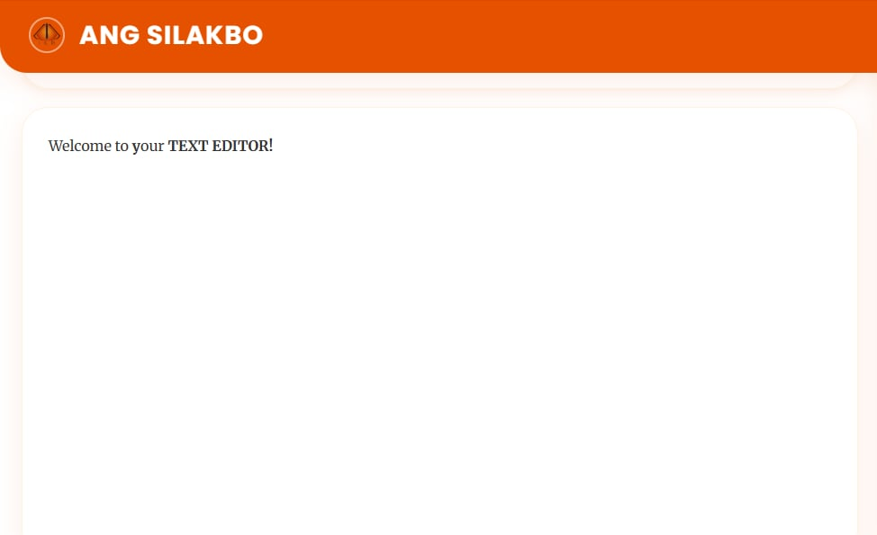
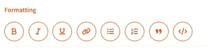

ANG SILAKBO
A Complete Tutorial for Our Definitive AI Tools
Introduction
Welcome to the ANG SILAKBO text editor tutorial! This guide will walk you through all the powerful features our text editor offers to help you create, edit, and enhance your content effortlessly. ANG SILAKBO combines traditional text editing capabilities with advanced AI-powered tools to provide a comprehensive writing experience.
Start typing your content here...
Getting Started
1 Accessing the Editor
You can access ANG SILAKBO through your web browser. Simply navigate to our website and click on the "Launch Editor" button. No installation is required, and your work is automatically saved to your account.
2 Creating a New Document
To create a new document, click on the "New" button in the top menu. You can also use the keyboard shortcut Ctrl+N (Windows/Linux) or Cmd+N (Mac).

3 Basic Text Editing
ANG SILAKBO offers all standard text editing features. You can format text (bold, italic, underline), adjust alignment, create lists, and more using the formatting toolbar at the top of the editor.
Pro Tip
You can quickly format text using keyboard shortcuts. For example, Ctrl+B for bold, Ctrl+I for italic, and Ctrl+U for underline.
Advanced Features
ANG SILAKBO's power comes from its advanced AI-powered features. Here's how to use each one:
Summarize
The Summarize feature analyzes your text and creates a concise summary of the content. This is perfect for long documents or articles.
How to use: Select the text you want to summarize (or leave unselected to summarize the entire document) and click the "Summarize" button in the toolbar.
Check Plagiarism
Our plagiarism checker compares your content against millions of web pages and academic papers to ensure originality.
How to use: Click the "Check Plagiarism" button. The system will highlight any passages that match existing content and provide source links.
Grammar Check
The Grammar Check tool identifies spelling errors, grammatical mistakes, punctuation issues, and style problems in your writing.
How to use: Click the "Grammar Check" button to scan your document. Errors will be underlined, and you can click on them to see suggestions.
Translate
Translate your content into over 50 different languages while preserving formatting and context.
How to use: Select the text to translate (or leave unselected for the entire document), click "Translate," and choose your target language from the dropdown menu.
Sentiment Analysis
This feature analyzes the emotional tone of your text, helping you understand how readers might perceive your content.
How to use: Click the "Sentiment Analysis" button. The system will provide a breakdown of emotions detected and an overall sentiment score.
Extract Keywords
The keyword extraction tool identifies the most important terms and phrases in your document, useful for SEO optimization or content indexing.
How to use: Click "Extract Keywords" to generate a list of key terms and their relevance scores.
Right-Click Context Menu
ANG SILAKBO offers convenient right-click options for quick text enhancements:
- Rephrase: Select text, right-click, and choose "Rephrase" to reword the selected content while maintaining the original meaning.
- Improve: The "Improve" option enhances clarity, fixes awkward phrasing, and improves readability of the selected text.
- Find Alternatives: This option suggests alternative words or phrases for the selected text, perfect for avoiding repetition or finding more precise language.
Important Note
Always review AI-suggested changes before finalizing your document, as context and personal style considerations may require adjustments.
File Operations
ANG SILAKBO provides several options for managing your documents:
Load
You can reload your document to refresh the page if it has been modified.
- Just click the "Load" button in the top menu
Export
Export your work in various formats:
- Click the "Export" button in the top menu
- Choose your preferred format (TXT or HTML)
- Select a destination on your device
Pro Tip
You can also add images by dragging and dropping them directly into the editor.
Keyboard Shortcuts
For faster workflow, learn these common keyboard shortcuts:
| Action | Shortcut |
|---|---|
| New Document | Ctrl+N (Win/Linux) / Cmd+N (Mac) |
| Save | Ctrl+S (Win/Linux) / Cmd+S (Mac) |
| Cut | Ctrl+X (Win/Linux) / Cmd+X (Mac) |
| Copy | Ctrl+C (Win/Linux) / Cmd+C (Mac) |
| Paste | Ctrl+V (Win/Linux) / Cmd+V (Mac) |
| Undo | Ctrl+Z (Win/Linux) / Cmd+Z (Mac) |
| Redo | Ctrl+Y (Win/Linux) / Cmd+Shift+Z (Mac) |
Conclusion
Congratulations! You now know how to use ANG SILAKBO's features to create, edit, and enhance your documents. Remember that our AI-powered tools are designed to assist your writing process, not replace your unique voice and style.
For additional help, check out our FAQ section or contact our support team through the Help menu. We're continuously improving ANG SILAKBO, so stay tuned for new features and enhancements.
Happy writing!